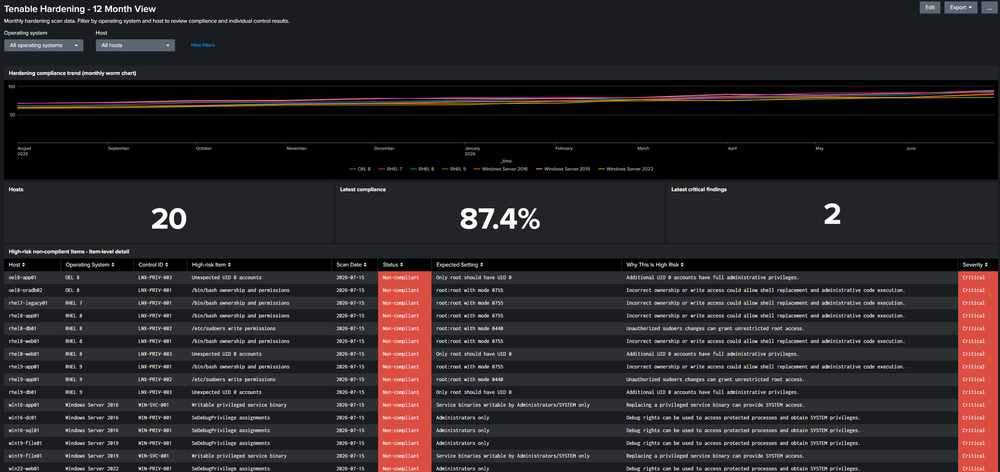

Splunk and Tenable Vulnerability Dashboard

01What it shows
Tenable scans a fleet and produces findings (CVEs, misconfigurations, failed hardening checks). This project takes that data, indexes it in Splunk, and builds the reporting layer on top: which hosts are drifting, whether compliance is trending up or down, and where the high-risk findings are concentrated. An operating-system dropdown filters every panel, so you can pivot from "the whole estate" down to, say, just the Windows Server 2016 hosts and watch their compliance line move month to month.
The lab runs on 12 months of monthly, clearly-marked synthetic Tenable-style data (generated by a Python script) so the dashboards, searches and trends are fully populated without touching a real scanner. A written guide documents the exact procedure to swap the synthetic feed for a live Tenable export.
02The stack
| Component | Image / tool | Role |
|---|---|---|
| Splunk Enterprise | splunk/splunk:9.4.3 | SIEM / analytics engine: indexes the scan data and serves Splunk Web on port 8000. Capped at 2 CPU / 2 GB. |
| Tenable data source | tenable_hardening.csv | 12 months of hardening/vuln findings mounted read-only into Splunk as the searchable dataset. |
| Custom dashboard | hardening_dashboard.xml | Simple-XML dashboard: "Tenable Hardening: 12-Month View" with OS dropdown, compliance trend and high-risk panels. |
| Data generator | generate_data.py (Python) | Produces the synthetic monthly Tenable-style scan data so every panel is fully populated. |
| Orchestration | Docker Compose | Single-service stack with license/terms auto-accept and resource limits; reproducible from one compose up. |
03How it fits together
Findings land as CSV → Splunk indexes them under a defined sourcetype with the fields the dashboard searches on → the Simple-XML dashboard runs SPL queries against that index and renders the panels, with the OS token wired into every search so one dropdown re-scopes the whole view. Everything is containerised, so the entire environment stands up from a single compose file: Splunk, the data and the dashboard together.
04Documentation
I wrote an operating guide alongside the build so someone else could take it into production without me. It specifies the data model the searches depend on, every SPL search behind the panels, the input and field-extraction configuration, and a nine-step procedure for replacing the synthetic dataset with a live Tenable feed, including the validation searches to run before releasing it to users.
05What this demonstrates
- Vulnerability management end-to-end: ingesting scanner output and reporting on remediation & hardening posture, exactly the VM workflow I work with.
- SIEM / detection engineering: Splunk data onboarding, sourcetypes, SPL, and dashboard building.
- Compliance trending: turning point-in-time scans into a defensible month-over-month posture story for stakeholders.
- Repeatable infrastructure: the whole lab is one Docker Compose file with a documented path to a live Tenable feed.
- Technical writing: an operating guide precise enough for another analyst to take the build into production, including data-model specs and cut-over validation.